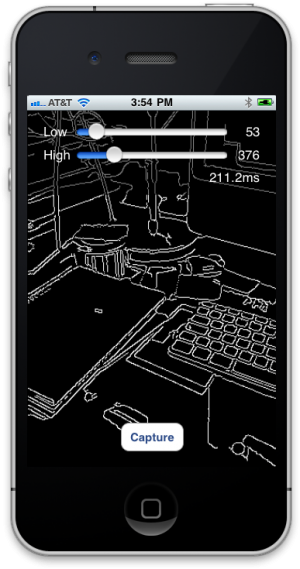

- Introduction
- The example project
- Using the OpenCV framework in your own projects
- Rebuilding the OpenCV framework
Update: Nov 28 2011 – The OpenCV framework has been rebuilt using opencv svn revision 7017
Update: Check out Part 2 of our series on computer vision.
Introduction
This article is the first in a series looking at computer vision for iOS using the OpenCV library. OpenCV is released under the BSD licence and so is free for both academic and commercial use. It includes optimised implementations of all the standard algorithms used today in the field of computer vision and has a huge user base across the Linux, Windows, Mac and Android worlds. In the past, OpenCV has been difficult to build for iOS. However, recent sterling work by the OpenCV team has added iOS build support and video capture.
In this article we aim to reduce the learning curve even further by providing the OpenCV library as an iOS framework that can be added to your own Xcode projects simply by dragging and dropping. We also provide a build script for re-building the framework should you need to, and an example project that wraps everything up with a neat demo of video capture and image processing using OpenCV on iOS.
We start by walking you through the example project then describe how to use the OpenCV framework in your own projects. Finally, we describe how to re-build the OpenCV framework and explain how the build script works.
As ever, we build on the work of others that have gone before us. We would like to acknowledge the OpenCV team, Eugene Khvedchenya for previous work on building OpenCV for iOS and Diney Bomfim for work on iOS frameworks.
The example project

The example project is hosted on GitHub. You can visit the GitHub project page at:
https://github.com/aptogo/OpenCVForiPhone
or download a zip archive of the project directly at:
https://github.com/aptogo/OpenCVForiPhone/zipball/master.
The project includes a pre-built OpenCV framework (OpenCV svn revision 7017), a build script to rebuild the framework and an example app that demonstrates video capture and simple image processing using OpenCV.
{kind=link}
To build and run the app, open the OpenCVClient Xcode project and hit ‘Run’. Note that video capture is not supported on the iPhone Simulator. Run the example app on an iOS device to see video capture in action.
The app starts by running some simple performance tests converting between UIImages and cv::Mat objects. Timing results are output to the console. After the performance tests have completed the main interface is shown. Tap the ‘Capture’ button to capture a video frame. The frame is processed using the Canny edge detection algorithm to exercise some of OpenCV’s image processing functions and the results are displayed on screen. Use the sliders to adjust the low and high algorithm threshold values. The time taken to process the frame is also displayed. Typical values are around 90ms on the iPhone 4 and around 200ms on the iPhone 3.
Using the OpenCV framework in your own projects
Adding the OpenCV Framework
The easiest way to add the OpenCV framework to your own project is to drag the OpenCV.framework folder from the example project folder in Finder and drop it onto the ‘Frameworks’ group of your target project in the Xcode Project navigator. Check the option ‘Copy items into destination group’s folder’ in the dialog that appears if you want to copy the OpenCV framework into your target project. If you are sharing a copy of the framework between multiple projects or have a common build location for the framework then you will want to leave the option unchecked.
Alternatively, you can navigate to the ‘Build Phases’ tab of the Project properties pane in Xcode. Drop down the ‘Link Binary With Libraries’ build phase item and click the ‘+’ button. Select “Add Other…’ from the dialog that appears and navigate to the OpenCV.framework folder.
Once you have added the OpenCV framework, your project is set up to link against the OpenCV libraries automatically and the OpenCV header files are also made available. Refer to OpenCV header files in your project #include statements using the framework-relative notation (i.e #include <OpenCV/opencv/.../...>).
Add additional required frameworks
To use the OpenCV framework you must add a few extra Apple-supplied frameworks to your project. To do this, navigate to the ‘Build Phases’ tab of the Project properties pane in xCode. Drop down the ‘Link Binary With Libraries’ build phase item and click the ‘+’ button. Add the frameworks and libraries shown below. The frameworks in the first column of the table are required. The frameworks in the second column are optional and are only needed if you are using the video capture support included in OpenCV’s highgui module.
| Framework | Required | Optional (required for video capture) |
| AVFoundation.framework | ✓ | |
| ImageIO.framework | ✓ | |
| libz.dylib | ✓ | |
| CoreVideo.framework | ✓ | |
| CoreMedia.framework | ✓ |
When you have added all the required frameworks, your project’s Build Phases tab in the Project Properties pane should look like this:
{kind=link}
The Build Phases tab in the XCode Project Properties pane
Include the OpenCV headers
The headers that declare the OpenCV and OpenCV2 APIs are provided as part of the OpenCV framework. The headers can be browsed by dropping down the OpenCV.framework item in the ‘Frameoworks’ group of the Project navigator in XCode. To write OpenCV client code you need to include these headers in your project. The easiest way to do this is to modify your pre-complied header file (<project name>-Prefix.pch) to add the three new lines shown below:
/////////////////////////////////////////////////////////////////////////// // Add this new section BEFORE the #import statements for UIKit and Foundation #ifdef __cplusplus #import <OpenCV/opencv2/opencv.hpp> #endif // Existing #import statements #ifdef __OBJC__ #import <UIKit/UIKit.h> #import <Foundation/Foundation.h> #endif
You must also change the extension of any source file in your project in which you wish to use OpenCV from ‘.m‘ to ‘.mm‘. This indicates to the compiler that the source file includes mixed Objective-C and C++ code. Note that individual source files that don’t use OpenCV can remain as ‘.m‘ files.
For the curious, the OpenCV headers must be included before UIKit.h and Foundation.h because OpenCV defines a MIN macro that conflicts with the MIN function defined by the Apple frameworks. If you include the OpenCV headers after UIKit.h and Foundation.h you will receive compilation errors such as ‘LLVM GCC 4.2 Error: Statement-expressions are allowed only inside functions’. Including the OpenCV headers first and surrounding the #import with the __cplusplus conditional test avoids this problem and means that you can still use plain Objective-C for ‘.m‘ files in your project that don’t call the OpenCV APIs.
Using the UIImage extensions
The example project includes extensions to UIImage for converting to and from cv:Mat objects. These are provided as a UIImage category in two source files (UIImage+OpenCV.h and .mm). To use the extensions simply add the two source files to your project and make use of the following new UIImage methods and properties:
@interface UIImage (UIImage_OpenCV) // Returns an autoreleased UIImage from cv::Mat +(UIImage *)imageWithCVMat:(const cv::Mat&)cvMat; // Initialises a UIImage from cv::Mat -(id)initWithCVMat:(const cv::Mat&)cvMat; // Returns cv::Mat object from UIImage @property(nonatomic, readonly) cv::Mat CVMat; // Returns grayscale cv::Mat object from UIImage @property(nonatomic, readonly) cv::Mat CVGrayscaleMat; @end
Rebuilding the OpenCV framework
Included with the example project is a shell script (opencvbuild.sh) that automates building and packaging of the OpenCV libraries. Before starting you will need to make sure that you have Subversion and CMake on your build system. Subversion is required to download the latest OpenCV sources and CMake is the build system used by the OpenCV team. Binary installers for both are provided at the locations listed below:
| Subversion for Mac | http://www.open.collab.net/downloads/community/ |
| CMake for Mac | http://www.cmake.org/cmake/resources/software.html |
Obtaining the OpenCV source
First change to the directory where you want the source files to be extracted. If you are following the layout of the example project, this is the opencv subdirectory of the project root directory:
cd <project root>/opencv
Next, checkout the latest sources from the offical repository. At the time of writing, support for iOS builds and video capture have not made it into the stable OpenCV release so we are using the latest sources in ‘trunk’. (Note the final period at the end of the command):
svn co https://code.ros.org/svn/opencv/trunk .
You should now have the OpenCV source tree under your chosen location:
{kind=link}
Directory listing of OpenCVForiOS project folder
Building OpenCV
The opencvbuild shell script takes two command-line arguments: the head of the OpenCV source tree and the location where you want the build to be performed. For the example project we built the framework in the project root directory (again, note the final period as the second argument to opencvbuild):
cd <project root> ./opencvbuild opencv/opencv .
If the build completed successfully you should now have the OpenCV framework along with three library packages in your chosen build location:
| OpenCV.framework | framework for use with iOS device or Simulator |
| OpenCV_iPhoneOS | libraries and headers for use with iOS device |
| OpenCV_iPhoneSimulator | libraries and headers for use with iPhone Simulator |
| OpenCV_Universal | fat libraries and headers for use with iOS device or Simulator |
The library packages are built as an intermediate step before the framework is assembled. You can choose to remove them or you may prefer to link against the individual libraries instead of using the OpenCV framework.
How it works
Most of the heavy lifting in opencvbuild is delegated to cmake and xcodebuild. First, an Xcode project file is created using cmake and the CMake configuration files provided by the OpenCV team. From revision 6675, support for iOS builds was introduced, which makes our life much easier. A command-line build is then initiated using xcodebuild driven by the Xcode project file created in the first step.
The build script actually performs the build twice, once targeting iOS devices (armv6 and armv7) and once targeting the Simulator (i386). The resulting binaries are then combined with the lipo tool to produce fat binaries that support operation on both device and simulator. These fat binaries can be found in the OpenCV_Universal intermediate build directory.
Finally, the libraries and OpenCV header files are assembled into the OpenCV framework. Two problems arise here, which the script overcomes with a couple of sneaky tricks. First, a framework for iOS can only include a single static library but the OpenCV build has produced 11 that we need to include. To get around this restriction the script simply combines the 11 libraries into one using libtool and then moves the resulting super-library into place within the framework. Secondly, the OpenCV headers use relative paths in #include statements, which makes them difficult to use without configuring header search paths within your project settings. To solve this, the script replaces any occurrence of a relative include path (i.e. "opencv/.../...") with a framework-based include path (i.e. <OpenCV/opencv/.../...>). The headers are added to the framework so that the whole package, library and headers, can be added to your project in a single step.
Links to example project source code
Git – https://github.com/aptogo/OpenCVForiPhone
Download zip – https://github.com/aptogo/OpenCVForiPhone/zipball/master
{ 54 comments… read them below or add one }
Thank you!
This article made it a breeze to get up and running with OpenCV on iOS. It is very well written. I am new to OpenCV, and the sample project you provide, OpenCVForiPhone, provided a great start. I anticipate future articles in this series.
Glad you liked it! We always appreciate hearing from our readers – the next installment is in the works…
I am having trouble building the latest OpenCV source with this script. See my stackoverflow question here: http://stackoverflow.com/questions/7544219/compiling-latest-opencv-from-source-on-os-x-with-cmake
Hi Robin,
I have used this tutorial and modified it for a open source tutorial app we are working on. The tutorial is there to benchmark various combinations of feature trackers (MSER, FAST, SURF , STAR) and various feature detector and comparison algorithms. We will be releasing this as a tutorial with source code when completed, do you mind ?
Jim @ Dev2rights
Hi Jim,
I would be interested to see this tutorial. Is it available online yet?
Cheers,
Fraser
Hi Robin,
Thank you for this great tutorial and the excellent sample code (the pre-built OpenCV framework is just what I was looking for).
Using your tutorial I was able to include openCV in my own project in no time – you just made my day!
Keep up the good work,
Irad
Hi Robin,
and thank you for sharing your script! I’ve added a comment here: http://stackoverflow.com/questions/7544219/compiling-latest-opencv-from-source-on-os-x-with-cmake
Can you give me few hints of what can be wrong?
XCode 4.2
CMake 2.6-4
opencv rev 6769
thank you in advance!!!
phy
Hello,
thanks for your work.
Two Questions:
1. What Version of OpenCV is in the framework?
2. How can I use cv::findContours. Everytime I use it with your framework I get assertions.
Thx.
Daniel
Hello again.
Never mind question 2. After some hours of recompiling OpenCV and looking at my code, I finally found my stupid mistake. I think I share it here, in case someone else is doing it.
Instead of writing std::vector<std::vector > to define a container for the resulting contour, I wrote std::vector<std::vector > what leads to my compiler mixing up cv::Point with Point (which actually exist, perhaps in the iOS SDK) and giving me this annoying assertions.
Thx.
Daniel
Thanks for the great and well written article. Thanks to you I was able to include OpenCV to my iOS project.
Hi, i’m trying to do templateMatching, but i think i’m doing it wrong because the ouput that i get doesn’t include any data if the object is found where. Atleast, i don’t see it…
If you have the time could you please take a look at:
http://stackoverflow.com/questions/8049066/iphone-opencv-template-matching
Great, will try out this tonight
hi ROBIN, your tutorial is so helpful! big thanks!
I have some problem when trying to rebuild the opencv source with your “opencvbuild.sh” script.
I noticed that build for the Simulator was successful but failed for the Device build, I am using:
Xcode4.2,
CMake 2.8.6
opencv Rev: 6988
The error info is like this:
============================================================
In file included from /Developer/Platforms/iPhoneSimulator.platform/Developer/SDKs/iPhoneSimulator4.0.sdk/usr/include/mach/task.h:37:
In file included from /Developer/Platforms/iPhoneSimulator.platform/Developer/SDKs/iPhoneSimulator4.0.sdk/usr/include/mach/mach_interface.h:50:
In file included from /Developer/Platforms/iPhoneSimulator.platform/Developer/SDKs/iPhoneSimulator4.0.sdk/usr/include/mach/mach.h:67:
In file included from /Users/yiqunc/opencv/opencv/modules/core/src/system.cpp:76:
/Applications/xcode4.2.0/Platforms/iPhoneOS.platform/Developer/SDKs/iPhoneOS5.0.sdk/usr/include/mach/arm/task.h:438:2: error: unknown type name ‘mach_zone_name_array_t’; did you mean ‘mach_port_name_array_t’? [3]
mach_zone_name_array_t *names,
^~~~~~~~~~~~~~~~~~~~~~
mach_port_name_array_t
fix-it:”/Applications/xcode4.2.0/Platforms/iPhoneOS.platform/Developer/SDKs/iPhoneOS5.0.sdk/usr/include/mach/arm/task.h”:{438:2-438:24}:”mach_port_name_array_t”
/Developer/Platforms/iPhoneSimulator.platform/Developer/SDKs/iPhoneSimulator4.0.sdk/usr/include/mach/port.h:107:27: note: ‘mach_port_name_array_t’ declared here [3]
typedef mach_port_name_t *mach_port_name_array_t;
^
In file included from /Developer/Platforms/iPhoneSimulator.platform/Developer/SDKs/iPhoneSimulator4.0.sdk/usr/include/mach/task.h:37:
In file included from /Developer/Platforms/iPhoneSimulator.platform/Developer/SDKs/iPhoneSimulator4.0.sdk/usr/include/mach/mach_interface.h:50:
In file included from /Developer/Platforms/iPhoneSimulator.platform/Developer/SDKs/iPhoneSimulator4.0.sdk/usr/include/mach/mach.h:67:
In file included from /Users/yiqunc/opencv/opencv/modules/core/src/system.cpp:76:
/Applications/xcode4.2.0/Platforms/iPhoneOS.platform/Developer/SDKs/iPhoneOS5.0.sdk/usr/include/mach/arm/task.h:440:2: error: unknown type name ‘task_zone_info_array_t’; did you mean ‘zone_info_array_t’? [3]
task_zone_info_array_t *info,
^~~~~~~~~~~~~~~~~~~~~~
zone_info_array_t
fix-it:”/Applications/xcode4.2.0/Platforms/iPhoneOS.platform/Developer/SDKs/iPhoneOS5.0.sdk/usr/include/mach/arm/task.h”:{440:2-440:24}:”zone_info_array_t”
/Developer/Platforms/iPhoneSimulator.platform/Developer/SDKs/iPhoneSimulator4.0.sdk/usr/include/mach_debug/zone_info.h:91:22: note: ‘zone_info_array_t’ declared here [3]
typedef zone_info_t *zone_info_array_t;
^
2 warnings and 2 errors generated.
** BUILD FAILED **
The following build commands failed:
CompileC /Users/yiqunc/opencv/tmp/modules/core/OpenCV.build/Release-iphoneos/opencv_core.build/Objects-normal/armv7/system.o modules/core/src/system.cpp normal armv7 c++ com.apple.compilers.llvm.clang.1_0.compiler
(1 failure)
============================================================
I also have checked this file “/Applications/xcode4.2.0/Platforms/iPhoneOS.platform/Developer/SDKs/iPhoneOS5.0.sdk/usr/include/mach/arm/task.h” and it does inculde another header file “” which includes which contains the declaration of “mach_zone_name_array_t”.
could you please give me some hints?
Thank you very much!
Yiqunc
It sounds like there have been some changes since 6675. I will take a look and make any fixes needed. Thanks for pointing this out.
Thanks Robin, you have done an awesome job!
I’ve rebuilt the framework using the latest revision from the OpenCV repository (7017) and updated the project repository on GitHub. I didn’t see any build problems. Let me know if you are still having issues rebuilding.
Hi thanks for your written
I have problem with running the script in command line. because it says that the line 80 (cmake -GXcode) in not found. could you please help me what i can do to make framework now?
thanks a lot
It sounds like a problem with you CMake installation. The cmake executable must be on your path for the script to work. Type ‘which cmake’ in Terminal to find where cmake has been installed and then type ‘cmake –version’ to see if it is on your path and to see which version is installed.
Don’t forget that you can always use the pre-built OpenCV framework provided with the example. You only need to rebuild using the script if you have a specific need to.
It is giving me problems with the library highgui on the revision 7054.
** BUILD FAILED **
The following build commands failed:
opencv_highgui:
CompileC /Users/opencv/trunk/tmp/modules/highgui/OpenCV.build/Release-iphonesimulator/opencv_highgui.build/Objects-normal/i386/cap_avfoundation.o /Users/opencv/trunk/opencv/modules/highgui/src/cap_avfoundation.mm normal i386 objective-c++ com.apple.compilers.gcc.4_2
(1 failure)
thanks
Hi Gustavo,
I’ve just tried building 7054 and am getting a different set of errors to you. The bleeding-edge trunk is not always stable and some check-ins may break the build on certain platforms. Unless you have a specific need to use the very latest OpenCV source from trunk it is best to use the pre-built framework included with the example project for this article. I periodically rebuild the framework and test it on a range of iOS devices so you can be sure that the pre-built framework will work and is fairly up-to-date.
Robin
Hi Robin,
Thanks for the answer, I don´t need the last version but I want to build the whole project because I want to try with some compiler options, to see if the framework improve the performance, because my application is slow and I need to increase the FPS.
The parameters wich I want to compile the libraries are thease:
-O3
-mfpu=maverick
-mfloat-abi=softfp
-ftree-vectorize
-mfpu=neon
-DNS_BLOCK_ASSERTIONS=1
On the script is only used “-O3″.
Also now, I have the same problem with the highgui in the revision 7017, besides it is not giving problems when I try to compile the libraries directly in XCode, I don´t know why.
Thanks!!!
Solved, I just need to erase some code from the source code.
But It’s not worth it to use the compile parameters the application is slower than the original compilation.
Good Luck
Hi Robin,
i got a conflict with the iOS Mapkit framework:
/Frameworks/MapKit.framework/Headers/MKGeometry.h:135: error: ‘isinf’ was not declared in this scope
If i delete the reference to the Mapkit framework, it’s working… any ideas? what can I do?
Thanks, Ben
This appears to be a known problem when using MapKit in an Objective-C++ project. Note that it is nothing to do with OpenCV.
isinfis declared as a macro in math.h but in an Objective-C++ project, which #includes <cmath> ,isinfis #undef’d andstd::isinfis declared instead as a wrapper.A workaround is to add this line before you #import MKGeometry.h or any of the other MapKit headers:
this is a great demo. thank you.
I just ported an opencv demo from windows to ios smoothly.
however, there is a minor issue that cv::polylines can’t be compiled correctly. It seems that the 5th parameter(int isClosed) is the reason. I had to use cv::line to work around. wish u could take a look at this problem.
waiting for your 3rd post about opencv on ios.
Hi. I followed your instructions. I am using opencv for descriptor extraction and homography. Everything works fine on simulator, but on device it has this error:
Ld /Users/attila/Library/Developer/Xcode/DerivedData/PushPop-elmkmflbmdvkqvaeocterigucivq/Build/Products/Debug-iphoneos/PushPop.app/PushPop normal armv7
cd /Users/attila/GAOYAN/PushPop
setenv IPHONEOS_DEPLOYMENT_TARGET 4.3
setenv PATH “/Developer/Platforms/iPhoneOS.platform/Developer/usr/bin:/Developer/usr/bin:/usr/bin:/bin:/usr/sbin:/sbin”
/Developer/Platforms/iPhoneOS.platform/Developer/usr/bin/g++-4.2 -arch armv7 -isysroot /Developer/Platforms/iPhoneOS.platform/Developer/SDKs/iPhoneOS4.3.sdk -L/Users/attila/Library/Developer/Xcode/DerivedData/PushPop-elmkmflbmdvkqvaeocterigucivq/Build/Products/Debug-iphoneos -F/Users/attila/Library/Developer/Xcode/DerivedData/PushPop-elmkmflbmdvkqvaeocterigucivq/Build/Products/Debug-iphoneos -F/Users/attila/GAOYAN/PushPop/../../Downloads/aptogo-OpenCVForiPhone-717a18c -filelist /Users/attila/Library/Developer/Xcode/DerivedData/PushPop-elmkmflbmdvkqvaeocterigucivq/Build/Intermediates/PushPop.build/Debug-iphoneos/PushPop.build/Objects-normal/armv7/PushPop.LinkFileList -dead_strip -miphoneos-version-min=4.3 -lz -framework ImageIO -framework AVFoundation -framework OpenCV -framework QuartzCore -framework Accelerate -framework MobileCoreServices -framework UIKit -framework Foundation -framework CoreGraphics -o /Users/attila/Library/Developer/Xcode/DerivedData/PushPop-elmkmflbmdvkqvaeocterigucivq/Build/Products/Debug-iphoneos/PushPop.app/PushPop
Undefined symbols for architecture armv7:
“___divmodsi4″, referenced from:
void cv::pyrDown_<cv::FixPtCast, cv::NoVec >(cv::Mat const&, cv::Mat&)in OpenCV(pyramids.o)
void cv::pyrDown_<cv::FixPtCast, cv::NoVec >(cv::Mat const&, cv::Mat&)in OpenCV(pyramids.o)
void cv::pyrDown_<cv::FixPtCast, cv::NoVec >(cv::Mat const&, cv::Mat&)in OpenCV(pyramids.o)
void cv::pyrDown_<cv::FltCast, cv::NoVec >(cv::Mat const&, cv::Mat&)in OpenCV(pyramids.o)
void cv::pyrDown_<cv::FltCast, cv::NoVec >(cv::Mat const&, cv::Mat&)in OpenCV(pyramids.o)
ld: symbol(s) not found for architecture armv7
collect2: ld returned 1 exit status
Do you have any advice? Thanks a lot!!
I traced that it is caused by this line:
cvPyrDown(iplImage, small_image, CV_GAUSSIAN_5x5);
I replaced it with cvResize to solve the link error problem. So it must be some issue with pyramids.o on device.
Thanks!
I have the problem with opencv
i did everything mentioned above, however, every time i try to include some header file (eg. #include ) i receive “no such file or directory” error. Can anyone help me with thia please?
@gis: i had the same problem – make sure you have added all the required ios frameworks (libz, imageIO, etc) after i added those, the build errors went away! thanks so much for putting this together, robin!
I followed all your steps and it MOSTLY works fine, but there is a problem! Now I am able to use mat objects in my ‘.mm’ files but when I declare it in a header file like this…
@interface TestViewController : UIViewController
{
cv::Mat myMat;
}
I get a compiler error: ‘Type name requires a specifier or qualifier’
However the same error does not come in your openCVClient where you go
cv::Mat _lastFrame;
Why does this happen?
If you use OpenCV types in a header file then you need to make sure that every source file that includes that header (directly or indirectly) is a ‘mm’ file. If you look back at the compiler messages output during the build you will see which compilation unit triggered the error you are seeing.
Wow! I changed my app delegate to .mm and it worked. It’s such a sucky issue, would’ve never known if u hadn’t told. Thanks a lot!
I have to write a comment to thank you for that post!
That will help me a LOT to start using OpenCV on IOS. Thank you very much! The sample project is very well organized and the post is very well written. Thanks a lot from Brazil!
Hi, somebody how saved image with cv:imwrite() in OpenCVClientViewController? I have image totaly rabish.
Is it my bad or is it some serious problem?
Badass! This rocks, I have one question, how does OpenCV from your framework use the AVFoundation & Core Video and the other apple frameworks when you open the video capture? Did you create your own subclass of VideoCapture or something and where can I see this code, just curious. Thanks!
Later builds of OpenCV include support for video capture using AVFoundation. You can look at the OpenCV source to see how it is done. Take a look at the next article in the series to see a more flexible way of doing it by using AVFoundation directly.
Fantastic job Robin! Thanks for sharing.
thanks very much. What’s the best build option when Compile it ?
I try to use some function about opencv
such like this cvLine(tempMat, cvPoint(10, 130), cvPoint(300, 130), cvScalar(255, 255, 255, 0));
but I got an error
“No matching function for call to cvLine”
why is that happen?
I have cpoy the frameWork into my project.
Did I miss something ?
The the first argument requires a pointer to CvArr.
If you CMD click on the offending function this is shown here:
cvLine( CvArr* img, CvPoint pt1, CvPoint pt2,
CvScalar color, int thickness CV_DEFAULT(1),
int line_type CV_DEFAULT(8), int shift CV_DEFAULT(0) );
So your code should read:
cvLine(&tempMat, cvPoint(10, 130), cvPoint(300, 130), cvScalar(255, 255, 255, 0));
Hope that helps,
Fraser
Thank you !!
It’s work well !
I haven’t use C For a Long time !!
Thank you again
And I write it in your demo OpenCVClientAppDelegate.mm
God !
I have no idea How to fix it…..
Hi,
I have a problem compiling when using certain functions in the openCV library.
Please see my question on stack overflow: http://stackoverflow.com/questions/9586913/compile-error-when-using-cvminmaxloc-on-ios
Any help would be greatly appreciated.
Thanks,
Fraser
Hi Robin,
I invoke the method cvCreateFGDStatModel in my project, it works fine on simulator, but crash on the devices, iPhone3GS and iPad2. However, if invoke cvCreateGaussianBGModel instead, it works fine on both simulator and devices , but it comes out not what i want.
Any help is appreciated.
Fenton
I found a solution to my problem…. Someone has fixed the issue in this fork of the aptogo code:
https://github.com/Abai/OpenCVForiPhone
Hi Fraser,
This fix has now been merged into the aptogo GitHub repository.
tried the sample code, it compiles ok & runs on the simulator. when i try to run it on my device, i get this error:
error: failed to launch ‘/Users/mark/Library/Developer/Xcode/DerivedData/OpenCVClient-gjpbrvzbxqrhugaqfmixoikidouk/Build/Products/Debug-iphoneos/OpenCVClient.app/OpenCVClient’ — No such file or directory (/Users/mark/Library/Developer/Xcode/DerivedData/OpenCVClient-gjpbrvzbxqrhugaqfmixoikidouk/Build/Products/Debug-iphoneos/OpenCVClient.app/OpenCVClient)
why is it looking for OpenCVClient? why doesn’t it run the .app file?
i’m using Xcode 4.3.1 and SDK 5.1
Hi Robin, I’ve been using the OpenCV frameworks but need some guidance, have you done anything with Eigenfaces for recognition on iOS ?
I’m trying to do face recognition but struggling with the PCA bit and especially projecting my sample vectors and then matching to the training set to match the person.
any help appreciated.
Chris
Thank you !!
It’s work well !
I haven’t use C For a Long time !!
Thank you again
Wouldn’t dynamic framework get the app rejected from iOS AppStore?
Hi Andrew,
It’s not a dynamic framework. It’s a static library wrapped up as a framework to make it easy to add to your Xcode project. iOS has no provision for custom dynamic frameworks so you couldn’t use one even if you wanted to.
Thanks a lot for the tutorial! The example project works great.
However, I have created my own project and copied the framework for opencv. When I type cv:: I don’t get the list of functions and such for cv as I can in your project. This only happens when attempting in a .h file but works fine in a .mm file. In the example project this works in both files. I believe I am missing something very obvious but really can’t see what that is. Any help is appreciated. Thanks!
I was able to solve this by changing the .h to .hpp
When I try to run this script, I get an error:
Build settings from command line:
SDKROOT = iphonesimulator5.1
xcodebuild: error: Unable to read project ‘OpenCV.xcode’.
Reason: Project file ‘OpenCV’ was written by an unsupported Xcode version (39)
Curious if anyone else has seen it?
{ 3 trackbacks }